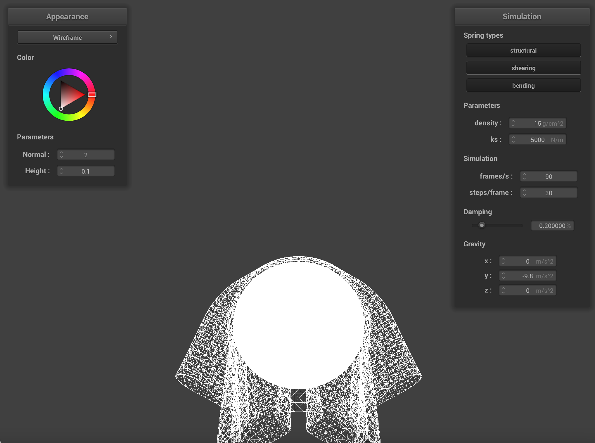
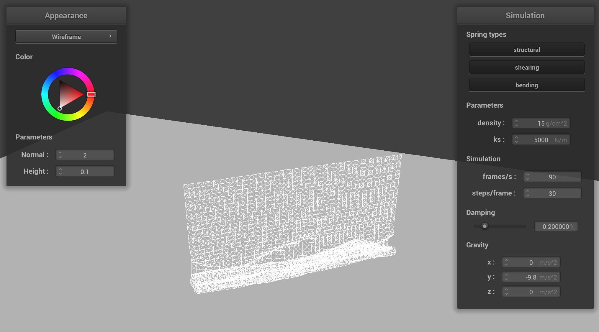

Project 4
Overview
In this project, I learned a lot about the simulation of cloth and how to construct fast shader programs. It's interesting how these short rules can make very complicated behavior when they are computed over all points and constraints in a scene. The main problems I encountered when implementing this project was in pointer manipulation, specifically knowing when it is possible to use a local variable and when it will be deleted by the garbage collector.
Part 1: Masses and springs
After building the graph of point masses and springs, we get this plane when we visualize pinned2.json:Screenie 1
Screenie 2
Without shearing constraints (horizontal/vertical constraints)
Only shearing constraints (diagonal constraints)
All constraints (diagonal and straight)
Part 2: Simulation via numerical integration
After implementing the gravity, spring force, verlet integration (for position updates), varying certain parameters of the simulation led to various cloth behaviors.Low spring constant ks (droops more because the points aren't pulled together tightly)
High spring constant ks (droops less)
Low density (droops less because gravity is overwhelmed by spring forces)
High density (droops more because gravity is more important)
Low damping (jiggles around a lot)
High damping (falls very slowly)
Part 3: Handling collisions with other objects
The cloth can now collide with spheres and planes! Here is the cloth on the sphere at varying spring constants. A higher spring constant makes the cloth less malleable to the shape of the sphere.
ks = 500, sphere (wrapped around the sphere)

ks = 5000, sphere
ks = 50000, sphere (very much dangling off the edge)
And here is my cloth lying peacefully on the plane
plane
Part 4: Handling self-collisions
In this part, I fixed a problem where the cloth would clip through itself. This is how the cloth falls and folds on itself:
Beginning to fall
Middle of fall
In a restful state
This behavior is changed by the cloth's density and spring constant
Low density=5 (few wrinkles)
High density=25 (very sharp wrinkles being pulled down because gravity >> spring force)
Low spring constant ks=500 (many wrinkles)
High spring constant ks=50000 (almost parallel lines going down because gravity / randomness in initial position is negligible)
Part 5: Shaders
A shader program is a fast piece of isolated code that handles a section of the graphics pipeline. For example, a vertex shader could use arguments like the vertex normal, displacement map textures, etc to determine the placement of this vertex, only. Also, a fragment shader could use similar arguments, color of the object at that point, and environment information to determine the outgoing color at that pixel. These are small programs that can be optimized to run very quickly.
Blinn-Phong shading approximates the realistic lighting for a scene by adding together ambient, diffuse, and specular lighting (with some linear weighting). The ambient component is a constant brightness, regardless of incoming light. The diffuse component comes from the incoming light but does not depend on viewing angle. The specular lighting is highly dependent on viewing angle. Here are some screenshots:
Only ambient shading (very little ambient light)
Only diffuse shading (the top is brighter because it's closer to the light)
Full Blinn-Phong (specular light highlights!)
Also, I mapped a Kirby TM face to the cloth
Kirby TM Texture
Other shaders I implemented were bump (no displacement of vertices) and displacement shaders. If the sphere's mesh is less coarse, I tend to see slightly more wrinkles in the texture, though the difference is not that big.
Bump mapping + sphere coarseness 16
Bump mapping + sphere coarseness 128
Displacement mapping + sphere coarseness 16
Displacement mapping + sphere coarseness 128
I also made a mirror shader! Hello, world!
Mirror